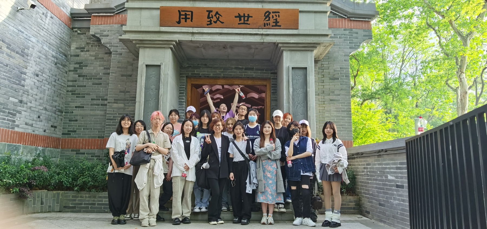
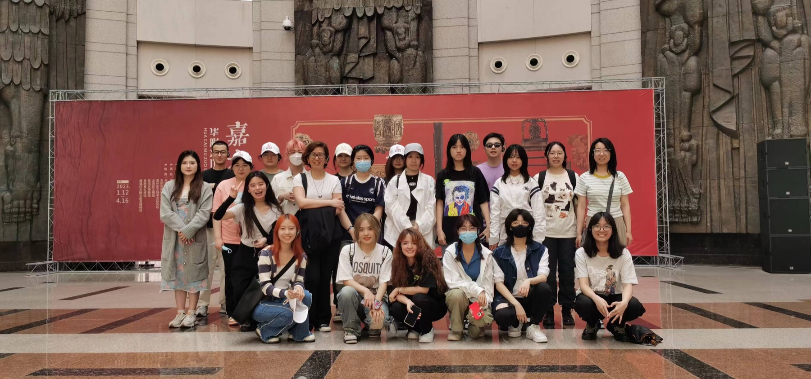
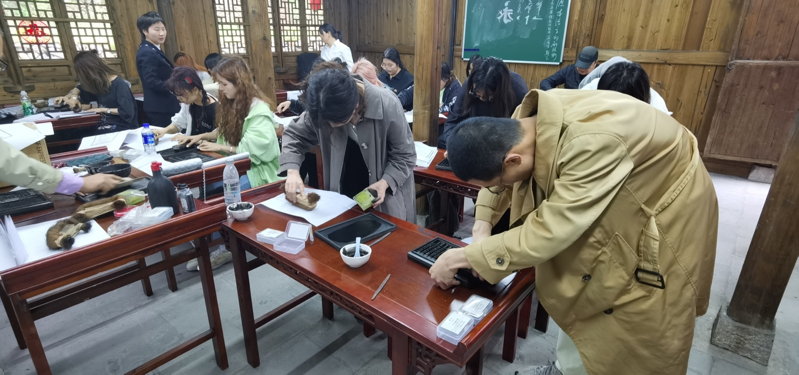
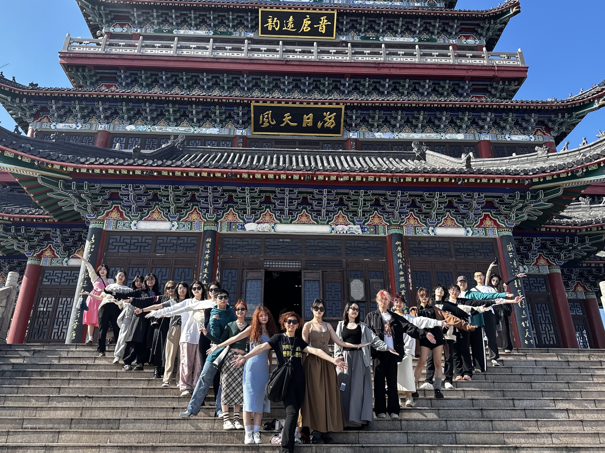
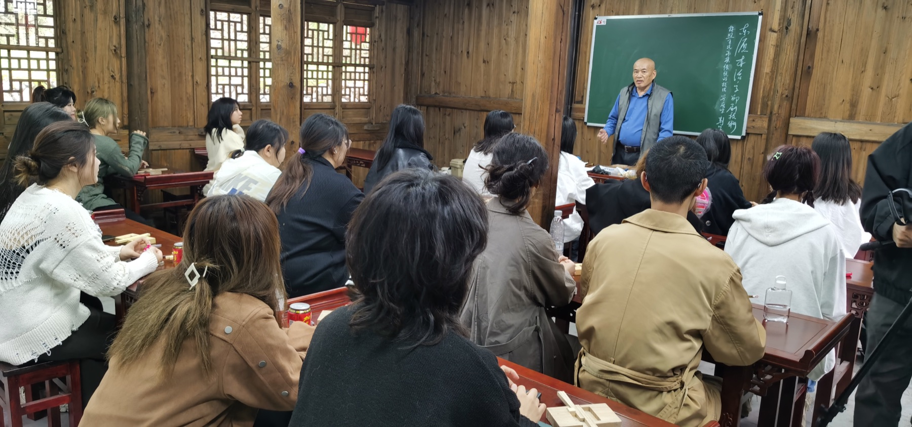
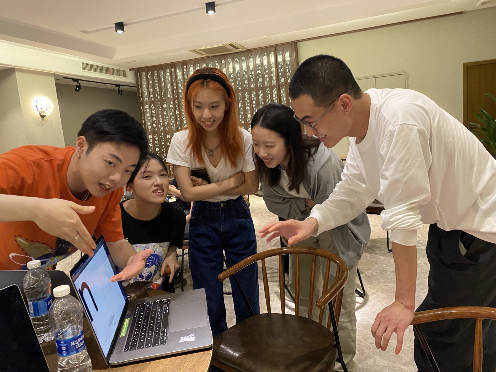
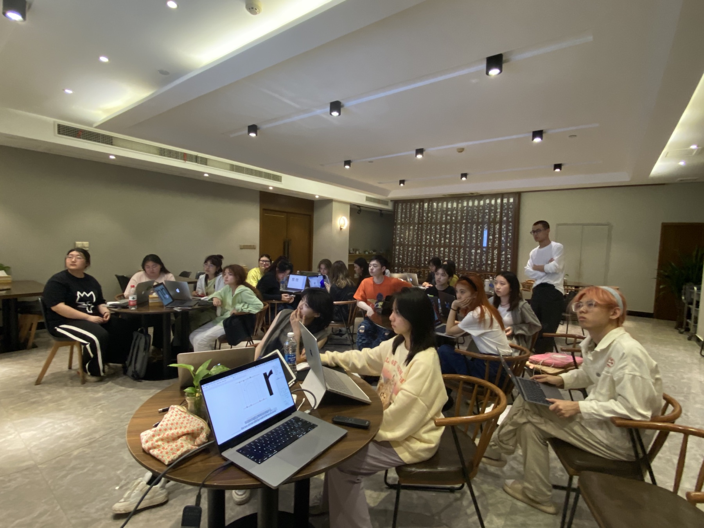
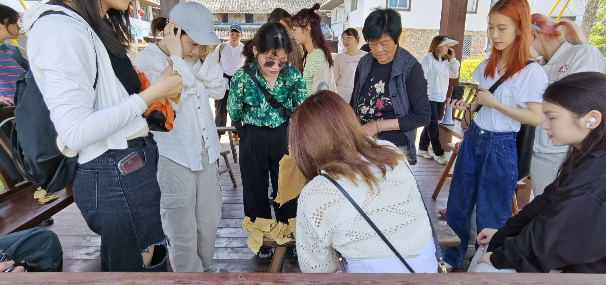

Teaching Assistant
Food Type Design: Field Practice Course
Elective course exploring food culture, lettering, and expressive type design.








Teaching Assistant
Elective course exploring food culture, lettering, and expressive type design.







